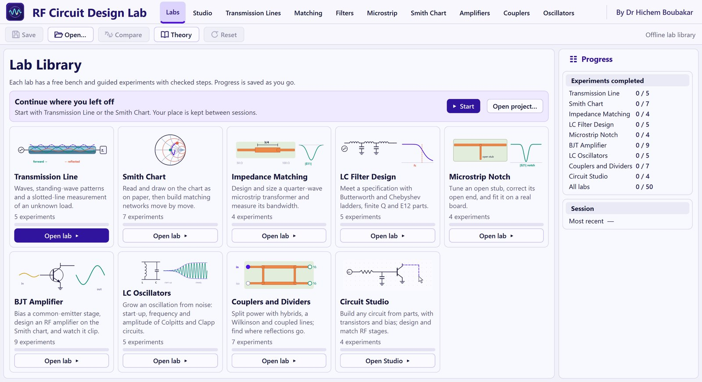
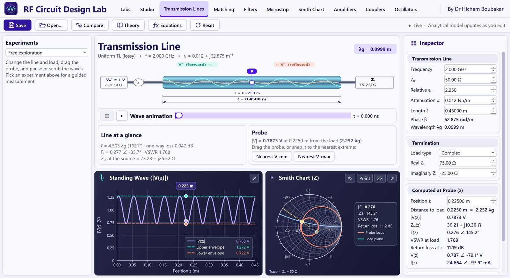
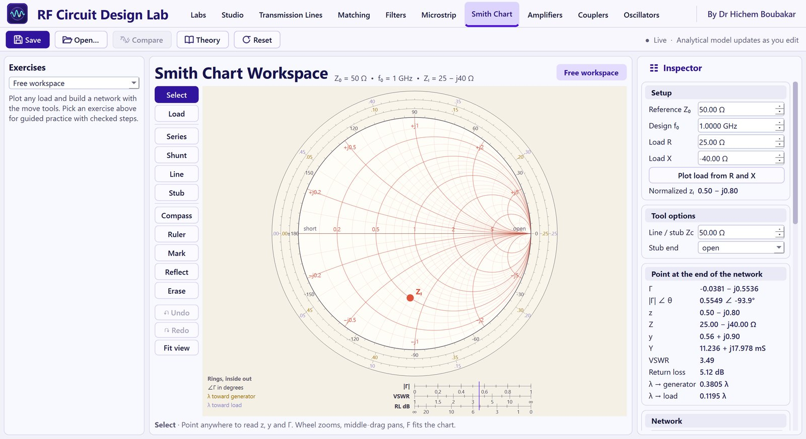
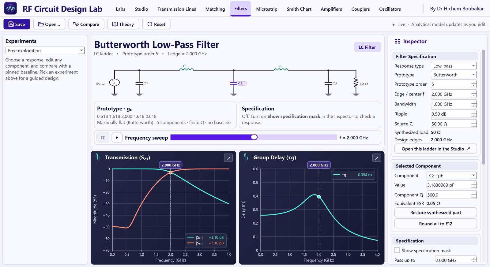
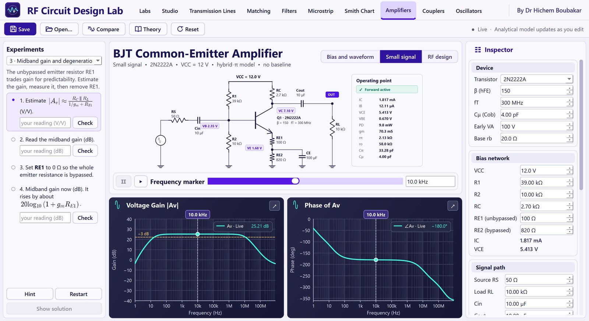
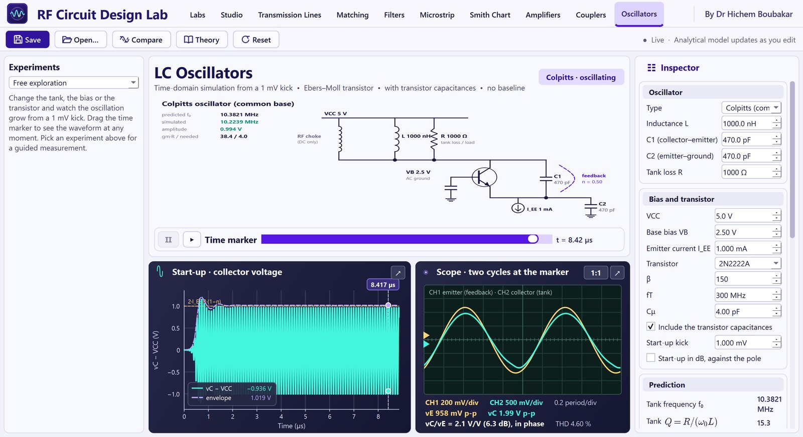
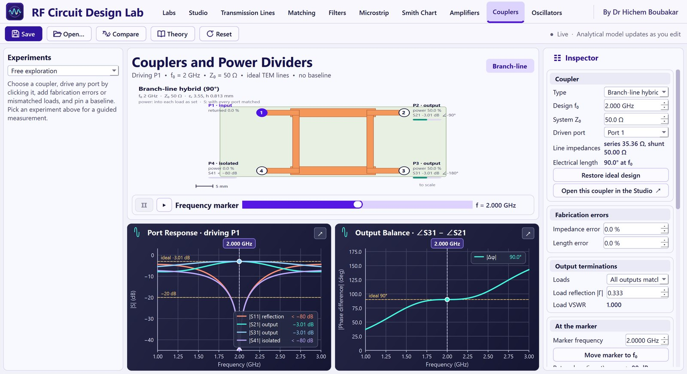
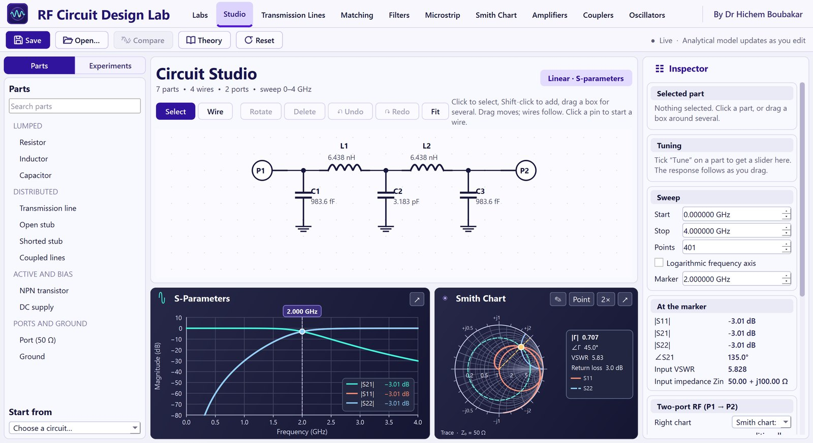
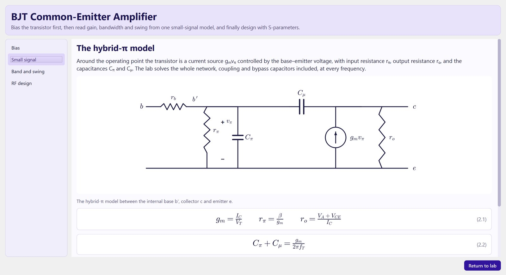

Learn RF circuit design by doing it.
Interactive labs for transmission lines, impedance matching, filters, microstrip, the Smith chart, amplifiers, couplers and oscillators, with textbook theory and guided experiments that check your answers.
Created by Dr Hichem Boubakar

A complete RF lab bench on your laptop
Every lab pairs a live circuit with its theory. Change a value and every plot, readout and drawing updates at once, so you see cause and effect instead of reading about it.
Nine labs and a Studio
From transmission lines to oscillators, plus a Circuit Studio where you build any circuit from parts and analyse it.
50 guided experiments
Step-by-step measurements that check your readings, give hints, and show the worked solution after a first attempt.
Textbook theory
A chapter for every lab, with properly typeset equations, drawn figures, worked examples and check-yourself questions.
A real Smith chart
Draw on classic paper with compass and ruler, build matching networks move by move, and see the exact solutions.
Real physics
Transmission-line and S-parameter models, a hybrid-π transistor, and a time-domain oscillator simulation that grows from noise.
Save and compare
Pin a baseline to compare designs, save your work as a project file, and pick up where you left off.
The labs
Each lab has a free bench to explore and guided experiments with checked steps.

Transmission Lines
Forward and reflected waves, the standing-wave pattern, and a slotted-line measurement of an unknown load.

Smith Chart
Read and draw on the chart as on paper, then build L-network, stub and quarter-wave matches move by move.

Matching, Filters and Microstrip
Size a quarter-wave transformer, meet a filter specification with Butterworth and Chebyshev ladders, and tune a microstrip notch.

Amplifiers
Bias a common-emitter stage, estimate its gain and bandwidth by hand, watch it clip on the oscilloscope, then design for an RF goal.

Oscillators
Watch a Colpitts or Clapp oscillator start from a tiny kick, predict its frequency and amplitude, and find the start-up limit.

Couplers and Dividers
Split power with branch-line and rat-race hybrids, a Wilkinson divider and coupled lines, and find where reflections go.

Circuit Studio
Build any circuit from lumped and distributed parts and transistors; get S-parameters, stability and gain readouts.

Theory chapters
Goals, explanations, figures, numbered equations, worked examples from the app's own models, and further reading.
Install
The installer needs no administrator rights and installs for your user account only.
- Download
RF-Circuit-Design-Lab-Setup-v0.18.exe(76 MB). - Open the downloaded file. If Windows shows “Windows protected your PC”, click More info, then Run anyway.
- Read and accept the licence, choose whether you want a desktop icon and whether
.rflabproject files should open in the app, then click Install. - Start RF Circuit Design Lab from the Start menu. Begin with the Transmission Line or Smith Chart lab.
Get-FileHash .\RF-Circuit-Design-Lab-Setup-v0.18.exeTo uninstall, use Settings › Apps › Installed apps. Your saved projects are kept.
System requirements
| Operating system | Windows 10 or Windows 11, 64-bit |
|---|---|
| Disk space | About 280 MB after installation |
| Screen | 1280 × 720 or larger; 1920 × 1080 recommended |
| Internet | Only to download. The app runs completely offline. |
| Administrator rights | Not needed |
Questions
Is it free?
Yes. It is free for learning and teaching. Please share a link to this page rather than the installer file, so everyone gets the latest version.
What does “beta” mean here?
All labs work and the physics is tested against closed-form results, but the app is still growing. Features may change between versions, and your reports help make it better.
Does it collect any data?
No. The app works offline and sends nothing anywhere. Your session and projects are stored only on your own computer.
Is it accurate enough for real designs?
It uses simplified models made for teaching. Results show the right behaviour and trends but can differ from real hardware. Do not use it for production or safety-critical design.
Does it run on macOS or Linux?
Not yet. This version is for Windows only.
How do I update?
Download the newest installer from this page and run it. It replaces the old version and keeps your saved work.
How do I report a problem or suggest a feature?
Open an issue on GitHub with what you did, what you expected and what happened, plus a screenshot if you can.